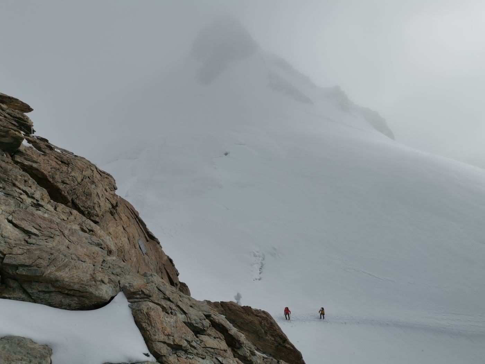

Nie każdy, kto był na szczycie,jest alpinistą

Nie każdy, kto był na szczycie, jest alpinistą
Idziesz od ośmiu godzin.
Szczyt jest blisko.
Nogi pulsują.
Zrywa się wiatr.
Chmury oplatają słońce.
Spadają pierwsze krople.
Gdzieś w oddali pada strzał.
Nie. To raczej grzmot.
Jesteś już tak blisko.
Idziesz dalej?
Decyzja zapadła. Idziesz dalej. Nie wiesz jeszcze, czy była dobra. Ale historię już masz.
Opowiesz potem o determinacji. O tym, że nie odpuściłeś, kiedy zrobiło się trudno.
Decyzja zapadła. Zawracasz. Nie wiesz jeszcze, czy była dobra. Ale historię już masz.
Opowiesz potem o odpowiedzialności. O tym, że wiedziałeś, kiedy się wycofać.
Oprawisz ją w piękną ramkę. Opowiesz tak, żeby miała sens. W sieci wymienisz się przepięknymi kadrami.
Przecież w tej opowieści i tak jesteś na szczycie.
Zresztą… nie tylko Ty. W naszej branży wszyscy są już na szczycie. Eksperci od wszystkiego. Wytwórcy skomplikowanych pojęć. Z biegiem czasu na szczycie robi się ciasno. Idziesz inną drogą niż reszta? Uważaj.
Zastanawia mnie jedno: jak te wszystkie osoby tam weszły?
A gdybym powiedział, że nie jesteś tak dobry, jak myślisz?
Że może po prostu zabłądziłeś?
I niczym się nie różnisz od setek innych turystów?
Przecież stoicie na tym samym szczycie.
Podziwiacie te same widoki.
Recytujecie te same wzniosłe słowa.
I patrzycie na resztę z góry.
Łatwo oceniać…
Ale co, jeśli naprawdę nie potrafimy poruszać się po górach?
Co, jeśli nigdy nie potrafiliśmy?
Może zapomnieliśmy, jak wygląda droga. Czym jest zmęczenie. Dyskomfort. Ból.
A błędy? Te, których nie widać?
Zaprojektowaliśmy idealny obraz siebie. I pokochaliśmy go.
Mówimy ze szczytu pewnym głosem. Na scenach. W sieci. Przy stołach, przy których zapadają decyzje.
Gdzie kończy się obraz, a zaczyna człowiek?
Ze szczytu łatwo snuć piękne historie. Wdrożyliśmy. Pokazaliśmy. Opisaliśmy. Poszliśmy dalej.
Czy ktoś wrócił sprawdzić?
Większość z nas nigdy się nie dowiedziała, czy miała rację.
Możesz mieć w portfolio setki szczytów. Ale góra jest głucha na to, co o sobie mówisz. Nie widzi Twoich prezentacji.
Po prostu jest.
I patrzy, gdzie stawiasz nogi.
Więc zanim pójdziemy dalej, jedno pytanie:
Czy naprawdę wiesz, jak się wspinać?
1. Pilsko
Kiedy myślę o swoim dzieciństwie, myślę o Beskidach. Pasję do gór zaszczepił we mnie ojciec i została ze mną do dziś. Co roku robi się bardziej głodna, a ja wciąż ją karmię. Bo to już dawno coś więcej niż pasja. To moja filozofia.
Góry mogą sporo nauczyć. Nie liczą się z Twoim planem. Nie liczą się z Twoim zmęczeniem. One po prostu są. I pozostaną na długo po nas.
Zacznijmy od początku. Czy pamiętasz swój dziecięcy szczyt? Niekoniecznie pierwszy. Taki, który udało Ci się zdobyć i z którego byłeś naprawdę dumny. Tylko Ty i góra. I być może bliscy, którzy szli obok. Czy pamiętasz, jak wyglądał ten dzień? Jaka była pogoda?
Moim jest chyba Pilsko, zdobyte od strony Sopotni Wielkiej. Minęło tyle lat, a do dziś pamiętam z tamtego dnia kilka bardzo wyraźnych kadrów. Ciepły, słoneczny dzień. Wodospad, który robił na małym człowieku ogromne wrażenie. Ból dziecięcych nóg. I irytowanie taty ciągłym „”.
Pytania dzieci są fascynujące. Myślę, że dziecko można zdefiniować przez świat zapętlony w „co to?” i „dlaczego?”.
Z jakiego materiału zrobione są myśli? Skoro pingwiny to ptaki, to czy robią sobie gniazda ze śniegu? Gdzie mieszka echo, kiedy nic nie mówię? Skąd góra wie, kiedy przestać rosnąć?
A czy Ty pamiętasz swoje dlaczego?
Czy obecnie pytamy z ciekawości? Czy dlatego, że tak wypada? Często to nie ciekawość, a pięknie zainscenizowana gra. Pytania nieszukające odpowiedzi. Kurtuazja? A może tylko zaznaczenie obecności na kolejnym spotkaniu o problemie, który omawiamy od pół roku.
Czasami to nie kurtuazja. Czasami to po prostu strach.
A przecież chwilę temu budowaliśmy konstrukcje z LEGO. Rozkręcaliśmy zabawki, żeby zobaczyć, co jest w środku. Gorzej potem szło ich ponowne składanie. Stawialiśmy architektoniczne dzieła sztuki z desek i gałęzi, a czasem z koców, stołów i puf. Rysowaliśmy kredą tory wyścigowe, a naszymi samochodami były zwykłe kapsle po piwie. Chociaż sama ta zwykłość już była niezwykła.
Być może LEGO było moim pierwszym design systemem. Konstrukcje z puf przechodziły testy użyteczności z udziałem moich kuzynek. A tory wyścigowe były pierwszymi ścieżkami użytkownika.
Mieliśmy to wszystko. Tylko nikt tego tak nie nazywał. Wystarczała ciekawość i potrzeba sprawdzenia:
„Co się stanie, jeśli zrobię to inaczej?”
Nie chodziło o to, żeby od razu zrobić coś idealnego. Chodziło o to, żeby spróbować.
Rozebrać. Złożyć. Zmienić. Sprawdzić. Czasem włożyć do ogniska i spalić. A potem spróbować jeszcze raz. I jeszcze raz.
Do dziś zresztą rozkręcam rzeczy. Składam. Sprawdzam. Zmieniam. Może rzadziej spalam. Czasem dlatego, że coś mnie po prostu wkurza. Czasem z czystej ciekawości. Nie po to, żeby ocenić — po to, żeby zobaczyć, dlaczego ktoś podjął taką decyzję.
Beskidy to był poligon idealny. Ich łagodna natura i dziecięca ciekawość — trudno o lepsze połączenie.
Piękno tych terenów sprawiało, że wracałem. A z każdą wizytą poruszałem się po nich sprawniej. Z każdą herbatą wypitą w ich towarzystwie czułem się pewniej. Stały się moim domem.
Wiedziałem, którędy najszybciej wejść. Na którym rozwidleniu skręcić. Czego spodziewać się po dobrze znanej drodze. Jak przejść przez strumień po ulewie.
Byłem bardzo dobry w poruszaniu się po znanym terenie.
Wtedy jeszcze nie wiedziałem, że nie wszystkie góry wyglądają tak samo. Ani jak brutalne może okazać się wyjście poza wydeptany szlak.
do końca wędrówki ok. 53 min
2. Dolina Pięciu Stawów
Na studiach pierwszy raz pojechałem w Tatry. Tydzień spędzony z przyjaciółmi w schronisku w Dolinie Pięciu Stawów całkowicie przeprojektował sposób, w jaki patrzę na świat.
Wizualnie — księżycowe wręcz piękno.
Kondycyjnie — o wiele cięższe doświadczenie.
Ekspozycyjnie — trochę strasznie.
Wszystko było nowe. Każda góra skrywała swoje tajemnice.
Szybko okazało się, że nie wystarczy znać drogi. Trzeba jeszcze wiedzieć, jak się po niej poruszać.
Pamiętam pierwszą styczność z łańcuchami. Świeżo poznaną zasadę trzech punktów podparcia. Gdyby ktoś wtedy spojrzał na , zobaczyłby, jak mało mam pewności siebie. Turysta w obcym, nieznanym otoczeniu.
I jak to z turystami bywa, porwałem się na klasyka. Orla Perć.
Do dziś pamiętam zdziwienie, kiedy udeptana ścieżka skończyła się, a przede mną stanęła pionowa ściana.
Ściana. Koniec ścieżki. …
Zrobiłem najtrudniejszy polski szlak spontanicznie. Bez wiedzy. Bez planu. Bez kasku. W jeansach. Do końca nieświadomy tego, czego ten szlak wymaga. Nie obyło się bez ryzykownych sytuacji.
Nie traktuję tamtej wyprawy jako błędu. Raczej jako kamień milowy. Przeszedłem ten szlak — ale nie dlatego, że umiałem. Dlatego, że miałem szczęście.
Wtedy myślałem inaczej. Wtedy myślałem, że dałem radę.
Z czasem zacząłem rozumieć, że odwaga i brak świadomości ryzyka to dwie zupełnie różne rzeczy. Bo wynik nie zawsze jest dowodem kompetencji.
I mogę dziś powiedzieć, że zrobiłem Orlą Perć. To prawda. Tak samo prawdą jest, kiedy ktoś pisze w CV, że prowadził projekt, przy którym był. Sam tak pisałem. Jedno i drugie brzmi dobrze. Jedno i drugie niczego nie mówi o tym, czy ta osoba wiedziała, co robi.
Bo to są dwa różne zdania:
„Byłem przy tym.”
„Podjąłem tę decyzję i jej broniłem.”
Pierwsze znaczy, że szedłeś za kimś. Drugie, że to Ty wybierałeś drogę.
W projektowaniu też miałem swoje jeansy. Sam też byłem pasażerem przy decyzjach, jakie zapadały przy stole. Wchodziłem w problemy, których jeszcze dobrze nie rozumiałem, z przekonaniem, że skoro potrafię coś zrobić, to znaczy, że wiem, co robię. Mimo wszystko często stawiałem na swoim. Bo przecież byłem ekspertem.
Chyba każdy ma takie momenty. Różnica polega na tym, czy po czasie potrafimy je rozpoznać.
Ile razy biznes spojrzał na Ciebie jak na turystę w jeansach?
I ile razy miał rację?
Ile razy byłeś tylko pasażerem?
Wróciłem do domu z dziwnym głodem. Wróciłem w Beskidy i zacząłem eksperymentować. Warianty nocne. Zimowe. Na azymut. Samotne i z przyjaciółmi. Czasem kilkudniowe. Potem to samo, tylko innymi drogami i w innym tempie.
Chciałem poznać górę z każdej możliwej strony. Ukraść trochę jej tajemnic. Zrozumieć, jak się zmienia i jak ja się przy tym zmieniam. Okazało się, że znajomość Beskidów przestaje wystarczać, kiedy największym wyzwaniem nie jest już znalezienie drogi, tylko własna głowa.
Przyszedł czas na lęk wysokości. Ferraty. Wspinanie. Jura. Drogi taternickie. Dłonie coraz rzadziej zdradzały niepewność. Następnie kursy i podejścia alpejskie. Kolejne góry i kolejne wyzwania.
I chyba w tym momencie zacząłem rozumieć coś ważnego:
Im więcej wiem o górach, tym bardziej wiem, jak dużo jeszcze o nich nie wiem.
do końca wędrówki ok. 51 min
3. Kozi Wierch
Na Kozim Wierchu byłem dwa razy. Za pierwszym razem jako turysta. Bodajże w 2013 roku. Za drugim — dwanaście lat później. Tym razem jako ktoś, kto doceniał już piękno tego terenu i zaczynał je rozumieć.
Ta sama góra. Ta sama droga. Czerwony szlak przez Zawrat, czyli Orla Perć. Można tam zresztą wejść jeszcze inaczej — zwykłym, czarnym szlakiem od Pięciu Stawów. Bez łańcuchów i innych ubezpieczeń. Ten sam szczyt, to samo zdjęcie. Ale zupełnie inna góra.
Z pierwszego razu pamiętam niewiele. Większość momentów, którymi mógłbym się delektować, ograniczała się do strachu. Może nie był to strach paraliżujący, ale na pewno czułem dyskomfort i niepewność swoich ruchów. Jakoś ukończyłem ten szlak. Znalazłem się na szczycie. Zrobiłem zdjęcie. . Rozdział zamknięty. Nieprędko chciałem to powtarzać.
Porwałem się na coś trudnego. Bez odpowiedniej wiedzy. Nogi miałem z galarety — potwierdzi to kolega, który mnie wtedy widział.
Mimo wszystko czułem dumę. Traktowałem to jako swój prywatny sukces.
Za drugim razem byłem w szoku. Minęło tyle lat, a ja szybko zacząłem rozpoznawać charakterystyczne formacje skalne. Konkretne miejsca. Utrudnienia, które kiedyś zapamiętałem.
To zaskakujące, jak działa nasza pamięć. Jak pamięta detale. I to sprzed tylu lat. A jednocześnie ma problem z przypomnieniem sobie, co robiliśmy dnia poprzedniego.
Mogłem zmierzyć się z tym samym terenem jeszcze raz. I wiesz co? Zrobiłem to z uśmiechem na twarzy. Każdy krok był przemyślany i pewny. Co śmieszniejsze — tym razem nie towarzyszył mi lęk wysokości.
Nic się nie zmieniło (no może poza słynną drabinką). Zmieniłem się ja.
I dopiero wtedy zrozumiałem, że za pierwszym razem przeszedłem ten szlak jako pasażer. Ktoś, kto chciał tylko odhaczyć kolejną „fajną rzecz”. Dopiero teraz mogłem zrozumieć tę drogę. Docenić ją. Świadomie mierzyć się z tym, co stawiała przede mną każda formacja skalna.
Szlak to nie góra.
Możesz znać trasę. Wiedzieć, gdzie skręcić, gdzie chwycić za łańcuch, gdzie zaczyna się trudniejszy fragment. Możesz przejść ją dziesięć razy. To nadal nie znaczy, że rozumiesz górę.
Do tego trzeba dojrzeć.
Dlaczego więc tak często ufamy jednej mapie?
W projektowaniu mamy swoje mapy i bardzo niechętnie z nich schodzimy. Najbezpieczniejszą z nich jest zdanie: „to zależy od kontekstu”.
Oczywiście, że zależy. Problem zaczyna się wtedy, kiedy to zdanie przestaje być początkiem rozmowy i staje się jej wygodnym końcem. Bo czasem projektant nie ma argumentu. Nie zrozumiał jeszcze problemu. Albo po prostu nie wie. I wtedy najłatwiej powiedzieć: „to zależy od kontekstu”. Albo: „bo tak mówią heurystyki Nielsena”. Mało kto przy stole wie, co to jest. I nikt nie dopyta, bo nie wypada.
Temat zamknięty. Szlak zaliczony. Jeszcze tylko zdjęcie. . Możemy iść dalej.
Heurystyka to narzędzie. Argument trzeba mieć własny.
Heurystyki mają swoje lata. Wielu z nas zna je tak dobrze, że stosuje je odruchowo, nie pamiętając, że kiedyś uczyliśmy się ich jako zasad. I nie chodzi o to, że są bezużyteczne. Przeciwnie. Szkodzą dopiero wtedy, kiedy przestajemy patrzeć na konkretną górę, bo przecież mamy już mapę.
Jest jeszcze trzecia mapa, najlepiej ubrana z nich wszystkich: „badania pokazały”.
Kiedyś zapytałem wprost projektanta wyżej ode mnie: jakie badania? Co dokładnie pokazały?
Badania nagle przestały istnieć. Ta mapa nigdy nie została narysowana.
Bywa i tak, że istnieje — tylko trochę inaczej, niż wygląda. Osiem wywiadów, z których w prezentacji cytuje się dwa. Te, które pasowały pod tezę. Reszta zostaje w pliku, do którego nikt nie wróci.
Dlatego kiedy ktoś opowiada mi o swoim researchu, najciekawsze pytanie nie brzmi „co wyszło?”. Brzmi: „co znaleźliście takiego, co Wam nie pasowało?”. Jeśli nie ma odpowiedzi, to nie były badania. To była mapa narysowana pod trasę, którą i tak chcieliśmy iść.
Nie zmieniamy mapy po kontakcie z terenem. Zmieniamy opowieść o tym, co zobaczyliśmy.
Jeżeli wszystko rzekomo zależy od kontekstu, ale na każdy kontekst mamy w kieszeni tę samą gotową odpowiedź — to czy aby na pewno patrzymy na ten sam szczyt?
Mont Blanc jest dobrym przykładem. Droga, którą przez lata opisywano jako klasyczną, wciąż widnieje na mapach w niezmienionej formie. Ale sama góra nie jest już taka sama.
Topnieje lód. Rozmarza zmarzlina, która przez tysiące lat trzymała skały na miejscu. Obrywów jest dziś około dziesięć razy więcej niż dwie dekady temu. Tam, gdzie jeszcze niedawno szło się po niemal płaskim lodowcu, trzeba było założyć linę poręczową, żeby dało się tam bezpiecznie przejść.
Latem 2026 wszystkie trzy najczęściej wybierane drogi na Mont Blanc były przez pewien czas niedostępne jednocześnie. Pierwszy raz od 1786 roku, czyli od pierwszego wejścia na ten szczyt.1
Mapa nadal grzecznie pokazuje tę samą linię. Tylko że góra pod nią zdążyła się zmienić.
Mapa nie musi być zła, żeby zaprowadzić Cię w złe miejsce. Wystarczy, że przestała pasować do terenu.
Z produktami jest identycznie. Zmienia się technologia. Rynek. Zachowania użytkowników. Możliwości biznesu. To, co działało bezbłędnie trzy lata temu, dziś może być przepisem na katastrofę.
Czasem mapy nie wybierasz sam. Dostajesz ją gotową. Ticket w Jirze opisany jeden do jednego. Ustalenia zapadły wcześniej. Bez Ciebie. Ty masz tylko „narysować”.
Kolorujesz. Czy nadal jesteś projektantem?
To zależy od kontekstu.
Czasem nie dostajesz mapy dlatego, że ktoś uważa ją za najlepszą.
Dostajesz ją, bo organizacja pamięta poprzednią wyprawę.
Bo prowadzenia nie dostaje się na prośbę. Na wspinaczce nikt nie puszcza przodem kogoś tylko dlatego, że o to poprosił. Puszcza go wtedy, kiedy wie, jak ten ktoś się porusza i jak radzi sobie w trudnym terenie.
Więc weź jeden mały fragment. Zrób go inaczej, niż mówi ticket. I pokaż różnicę. Nie musisz zmieniać świata. Wystarczy, że pokażesz, że mogło być inaczej.
Możesz świetnie znać Figmę, design system i branżowe standardy. To jest wartościowa kompetencja. Ale czym innym jest znajomość wydeptanej ścieżki, a czym innym sztuka poruszania się w ciężkim terenie.
Dobry projektant nie musi znać każdej góry.
Powinien umieć poruszać się po górach.
Bo kiedy kończy się wydeptany szlak, zaczyna się prawdziwa wspinaczka.
do końca wędrówki ok. 46 min
4. Mnich
Mnich jest dla mnie dobrym obrazem tego momentu, kiedy przestajesz myśleć o każdym ruchu osobno.
Wspinasz się. Prowadzisz. Masz przed sobą kolejną wpinkę. Czasami, żeby do niej sięgnąć, musisz zrobić ruch, którego jeszcze nie jesteś do końca pewien. Czujesz nawet pewien dyskomfort z tym związany. Wiesz, że musisz przenieść ciężar ciała. Puścić jedną rękę. Zaufać nogom. Zaryzykować trochę więcej niż przed chwilą. I nagle decydujesz się wykonać ten jeden ruch, który zadecyduje, czy utrzymasz się w ścianie…
Na początku ktoś mówi Ci, co zrobić. Potem próbujesz to wykonać. Nie wychodzi. Próbujesz jeszcze raz. Nie wychodzi. Jeszcze raz. I jeszcze raz. Do momentu, aż któregoś dnia Twoje ciało zaczyna rozumieć. Zaczynasz wiedzieć, co zrobić, zanim zdążysz to nazwać.
To już nie teoria.
To pamięć mięśniowa.
Michael Polanyi napisał kiedyś, że wiemy więcej, niż potrafimy powiedzieć.
Doświadczony wspinacz wie, pod jakim kątem ustawić ciało, żeby odciążyć przedramiona. To opiera się na prawach fizyki, ale nikt nie wykonuje w głowie obliczeń. Nie da się też precyzyjnie wyjaśnić słowami, jak mocno docisnąć but na wyślizganej ścianie albo jak ułożyć dłoń na obłym chwycie.
Nie każdy patent da się zwerbalizować.
Z projektowaniem bywa podobnie. Patrzysz na produkt kilka sekund i wiesz, jak jest zbudowany. Wiesz też, że coś jest nie tak — choć uzasadnienie przychodzi dopiero po chwili. Albo wcale.
Kurs tego nie da. Kurs daje mapę, i to jest sporo. Ale odruch trzeba sobie wypracować samemu.
Setki przepracowanych godzin. Powtórzenia. Błędy. Nieudane próby. Przy okazji obdarcia. Kolejne próby. Naciągnięcia. Zakwasy. Czasami może pojawić się krew. I jeszcze jedna próba. I kolejna.
Ale tak właśnie stajemy się praktykami.
To dlatego dwanaście lat później rozpoznawałem na Orlej Perci miejsca, o których dawno przestałem pamiętać. Ciało pamiętało za mnie.
Dlatego kiedy ktoś pyta mnie, jak zacząć w designie, nie zaczynam od teorii. Zaczynam od budowania.
Weź rozwiązanie, które Ci się podoba. Spróbuj zrozumieć, jak działa. Dlaczego jest dobre? Jak zostało zbudowane? Co sprawia, że właśnie ten element działa tak, a nie inaczej?
A potem spróbuj je odtworzyć. Nawet jeden do jednego.
Nie po to, żeby je skopiować. Po to, żeby zobaczyć, czego wcześniej nie widziałeś.
Bo kiedy zaczynasz naprawdę budować, zaczynasz też naprawdę pytać. A kiedy zaczynasz pytać, zaczynasz rozumieć. I wtedy teoria przestaje być zbiorem definicji. Zaczyna odpowiadać na pytania, które sam już masz.
Z czasem pojawia się coś, co można nazwać intuicją. Ale intuicja nie bierze się znikąd. Za intuicją najczęściej stoją setki wcześniejszych prób, błędów i obserwacji.
Często chcemy za szybko osiągnąć jakiś etap. Często nawet nie jesteśmy świadomi, że jeszcze nie jesteśmy gotowi. Głowa nie jest wystarczająco spokojna. Ciało nie jest jeszcze gotowe. I dlatego odpadamy od ściany. Czasami zatrzymamy się na naszej asekuracji. A czasami ten upadek bywa naprawdę bolesny.
W ścianie ta informacja przychodzi natychmiast. Zrobiłeś zły ruch — odpadasz. Nie ma dyskusji. Nie ma prezentacji. Nie ma roadmapy. Nie ma KPI.
W projektowaniu rzadko dostajesz taką odpowiedź. Wdrażasz, idziesz dalej, a produkt zmienia się z dziesięciu innych powodów. Można przepracować w tym zawodzie wiele lat i nigdy się nie dowiedzieć, które ruchy były dobre.
A niektóre były po prostu szczęśliwe. Tylko że tego też się nie dowiesz.
Odpadałem kilka razy. Najboleśniej wtedy, kiedy chciałem zmienić wszystko za jednym podejściem. Pół roku projektowania nowych mechanik i eleganckich rozwiązań dla znanej marki e-commerce. Zamiast iteracyjnie — wszystko naraz. Co mogło pójść nie tak?
Bolało.
To, co osiągnąłem, było dobre. Do dziś tak uważam. Tylko że skończyły się środki, zanim skończyła się droga.
Doświadczenie nie polega na tym, że wiesz wszystko. Polega na tym, że szybciej rozpoznajesz, czego jeszcze nie wiesz.
do końca wędrówki ok. 43 min
5. Marmolada
Mieszkam na dziesiątym piętrze. Winda działa. Jeżdżę nią codziennie i nie mam z tym problemu.
Mimo wszystko staram się regularnie wchodzić po schodach. Nie dlatego, że tak trzeba. Dlatego, że po roku jeżdżenia windą przestaje się wiedzieć, ile to właściwie jest — dziesiąte piętro.
A Ty? Próbowałeś kiedyś wejść na swoje?
Marmolada nie jest jednym szczytem. To cały masyw, najwyższy w Dolomitach, z lodowcem i kilkoma wierzchołkami. Najwyższy z nich to Punta Penia — 3343 metry.
Można ją zdobyć, wjeżdżając na Punta Rocca. Trzy odcinki kolejki i jesteś na górze. Piękna sprawa. Oszczędzasz czas. Oszczędzasz siły. Stajesz na tarasie, robisz zdjęcie panoramy. . Kadr się zgadza.
Tyle że Punta Rocca ma 3265 metrów. Do najwyższego punktu jest stamtąd siedemdziesiąt osiem metrów w pionie. I cała reszta drogi, na którą trzeba mieć sprzęt i umiejętności.
Z tarasu widać go doskonale.
Można też wejść ferratą, czyli żelazną drogą: szlakiem ubezpieczonym stalową liną i innymi metalowymi ustrojstwami. Tutaj prowadzi zachodnią granią i nazywa się Cresta Ovest. W teorii trudności techniczne nie cięższe niż na Orlej Perci. W praktyce różnie bywa. Spora ekspozycja. Czasem oblodzenia i pogoda, która zmienia wszystko. Prawie 1300 metrów przewyższenia. Narastające zmęczenie. Mijają godziny, a góra wciąż daje o sobie znać. W końcu stajesz na wierzchołku z zupełnie innym bagażem.
Mijałem po drodze różnych ludzi. Najbardziej zapamiętałem parę, która szła na lotnej asekuracji, w pełnym alpejskim szpeju. Sprzętu mieli więcej, niż wymagała droga. Umiejętności — mniej, niż wymagał sprzęt. Przez brak pewności i nadmiar rzeczy do ogarnięcia zatrzymywali się w miejscach, w których nie powinno się stać. Wstrzymywali ruch. Dokładali zmiennych. Cudzych zmiennych, które musiałem uwzględniać.
Jest jeszcze droga klasyczna przez lodowiec, z rakami, czekanem i liną. I jest południowa ściana — ponad sto ekstremalnych dróg wspinaczkowych, o których większość ludzi na tarasie nigdy nie usłyszy.
Jest za to jeden wspólny mianownik. Wszyscy powiedzą potem to samo: byłem na Marmoladzie.
Każda z tych dróg prowadzi na szczyt. Ale nie uczą tego samego.
I nie chodzi o to, żeby nie korzystać z kolejki. Korzystam. Czasem to najrozsądniejsza decyzja, jaką można podjąć.
Chodzi o różnicę między tym, że wjechałeś, a tym, że myślisz, że wszedłeś.
Sztampa
Tę drogę na skróty widać jak na dłoni. Dziś stworzenie produktu to jedno zdanie.
. Kolejna aplikacja.
. Kolejny wtórny design.
. Research bez pokrycia.
I na każdym etapie — — foteczka ze szczytu.
Zalaliśmy internet falą sztampy. Wtórnych rozwiązań jest dziś tyle, co turystów w sierpniu nad Morskim Okiem. Mało kto weryfikuje, czy te generacje w ogóle mają sens. Mało kto już cokolwiek weryfikuje. Byleby tylko szybko wejść na szczyt i zrobić foteczkę.
Coraz częściej widzę, jak ktoś powołuje się na artefakty produktu, które powstały przez pomyłkę modelu. .
Potem to trafia do ticketu. A tam kolejne halucynacje w opisie zadania, które masz wykonać. Czytam i mam w głowie jedno wielkie .
W międzyczasie powstaje wygenerowana makieta do zakodowania. Nie ma sensu ani pod względem logiki, ani użyteczności. .
Ktoś idzie na skróty, vibe koduje tę makietę, a potem dziwi się, że na code review ktoś ma pretensje. .
A najśmieszniejsze jest to, że zespół wie. Tylko na tym etapie nie ma już jak zawrócić.
…
„Poprawimy w następnym sprincie”.
To się naprawdę dzieje. To właśnie skutek dążenia na skróty. Bezrefleksyjnego klikania.
Następny sprint przychodzi, a użytkownicy zaczynają zgłaszać dziwny błąd. Zespół próbuje go naprawić. Po raz kolejny. To znaczy: prosi o to model. Model sobie nie radzi. Idą więc do autora rozwiązania. Autor też pyta model.
I tak siedzą sobie wszyscy i patrzą. Patrzą, jak schodzą na nich kolejne lawiny tekstu. Każda przysypuje ich trochę bardziej. W którymś momencie nie wiadomo już, czy ktoś ich odkopie. Model brzmi bardzo pewnie. Natomiast nikt nie wie, czy cokolwiek z tego jest prawdą.
Ale spokojnie. Poprawimy w następnym sprincie.
Patrzę na te rzeczy i widzę Czupel w listopadzie. Błoto po kostki. Mokre kamienie. Drzewa bez liści. Mgła, przez którą nic nie widać dalej niż na dziesięć metrów.
Tak właśnie wygląda sztampa. .
Sprzęt
Nie mam problemu z tym, że narzędzia są coraz lepsze. Sam coraz częściej projektuję za pomocą słów i promptów. Współpracuję z AI. Mówię, co chcę osiągnąć. Iteruję. Sprawdzam. Zmieniam.
Traktuję to jak kolejną przygodę. To po prostu nowe narzędzie. Nowy teren do poznania. Nowe mapy. Nowe spojrzenie na górę.
Sztuczna inteligencja nie zabiera nam góry. Odciąża nas z części sprzętu, którym do tej pory się po niej poruszaliśmy.
Tylko że sprzęt, którego nie nosisz, przestaje Cię obciążać. A mięsień, który nie jest obciążany, słabnie. Zanika. Przestaje pracować.
I szybko zauważyłem jeszcze jedno. Model nie ma tych setek prób, z których bierze się intuicja. Ma wzorce. Często nawet nie wiesz, skąd te wzorce trafiły do jego pamięci. Bez dobrego wzoru wraca do sztampy. Dasz mu za dużo kontekstu, a rozmyje zadanie. Dasz za mało, a wróci z czymś, co widziałeś już sto razy. Trochę jak w ścianie, gdzie wszystko zależy od balansu.
Dlatego to narzędzie działa tylko w jedną stronę. Trzeba wiedzieć, co się chce zrobić. Dokąd się zmierza. I na każdym kroku weryfikować, czy kierunek jest właściwy.
Raki
Coraz częściej jesteśmy rozliczani z dowiezienia. Nie ze zrozumienia. A skoro i tak rzadko się dowiadujemy, które decyzje były dobre, to różnica między zrozumieniem a wygenerowaniem staje się w praktyce niewidoczna.
Wysiłek był kiedyś filtrem. Musiałeś przemyśleć coś kilka razy, żeby dojść do sedna problemu. Żeby w ogóle zacząć pracę. Teraz to coś zamieniło się w skopiowanie zawartości całego zadania do odpowiedniego okienka. Kilka sekund. Kilka ruchów palców. . .
I to jest paradoks pamięci mięśniowej. Robisz to automatycznie, a mięśnie i tak zanikają.
Przynajmniej przez jakiś czas.
Bo lata schodzą na naprawianiu produktu po dziesiątkach złych decyzji, które zdążyły zrosnąć się z jego fundamentem. A potem to, co wreszcie zaczęło działać, psujemy od nowa. Tym razem szybciej.
. . .
I wracamy tam, skąd wyszliśmy. Tylko z ładniejszymi ekranami.
Piszemy przy tym coraz więcej. Dokumentacja, standardy, zapisy ustaleń. Transkrypcje całych spotkań. Tylko że czyta to już nie człowiek, a model — i to on wyciąga z tego wnioski, których nikt nie sprawdził.
AI w rękach specjalisty naprawdę jest potężnym narzędziem. Tylko że narzędzie nie zna kontekstu Twojego produktu. Zna wzorzec.
To trochę jak raki. Pozwalają wejść tam, gdzie bez nich byś nie poszedł. Ale jeśli ktoś nie umie się nimi posługiwać, nie zwiększają bezpieczeństwa. Czasem wręcz przeciwnie. W wariancie optymistycznym zrobisz sobie dziurę w spodniach. Rzeczywistość bywa bardziej bolesna.
Norka
W projektowaniu możemy dziś bardzo szybko wygenerować rozwiązanie. Zamiast budować coś od zera, wykorzystujemy design system. Sprawdzone patterny. Gotowe frameworki. Narzędzia pozwalają przeskoczyć etapy, które kiedyś zajmowały dni albo tygodnie. I bardzo dobrze. Po to powstały.
Tylko że stworzenie rozwiązania często jest łatwiejsze niż zrozumienie problemu. Jeszcze trudniej jest rozłożyć go na części. Jak zabawkę. I zobaczyć zależności. Albo zadać właściwe pytanie.
A najtrudniej zauważyć, że to pierwsze pytanie, od którego zaczęliśmy, było błędne.
A co, jeżeli od początku iterujemy zły problem? I w ogóle nie mamy o tym pojęcia?
Może to kwestia charakteru. Może lubisz w kółko reprodukować te same rozwiązania w ten sam sposób. W kółko i w kółko. Może czujesz się dzięki temu bezpieczniej. Skryty jak świstak. Schowany za sprawdzonym rozwiązaniem w swojej norce.
Ale czy zauważyłeś, że od kiedy to jest łatwe, robisz w kółko to samo?
Zadaj sobie jedno pytanie: czy potrafiłbyś zbudować coś od zera?
Postawić krok na nieznanym terenie.
Wymyślić świeży koncept.
Przeprowadzić analizę i samodzielnie się pod nią podpisać.
Pokonać drogę na szczyt samemu?
Narzędzi można nauczyć się szybko. Myślenia już niekoniecznie.
Pingwin
Jestem ciekaw, co zostanie z projektanta, który definiował siebie wyłącznie przez jedno narzędzie. Jeden wygodny sposób poruszania się. Po znanej ścieżce.
Co się stanie, kiedy zmieni się teren? Kiedy sprawdzony sposób zawiedzie? Kiedy narzędzie przestanie być Twoją przewagą?
Kiedyś poprosiłem projektanta, żeby na chwilę porzucił swój dobrze znany stack i spróbował rozwiązać podobny problem w zupełnie innym środowisku. Padło na vibe coding.
Nie chodziło o to, że nie znał narzędzia. Chodziło o to, że kiedy zniknął bezpieczny interfejs i gotowe klocki, zniknęły też jego myśli. Nie potrafił opisać, co właściwie chce zbudować — bo do tej pory robił to za niego design system, gotowe ekrany albo koledzy z zespołu.
Wynik?
Zamiast zwinnej kozicy górskiej dostaliśmy niezgrabnego, chaotycznego pingwina.
Uwielbiam pingwiny. Tylko nie jestem pewien, czy chciałbym z którymś iść na Grossglocknera.
Kod coraz łatwiej napisać. Choć może powinienem użyć słowa „wygenerować”? Trudniej sprawić, żeby rozwiązywał rzeczywisty problem i dało się z niego korzystać bez frustracji.
Ot, taki paradoks: narzędzie, które w kilka sekund rozwiązuje jeden problem, w tym samym czasie potrafi stworzyć kilka kolejnych.
Dziś każdy dostał supermoc tworzenia. Szybki wjazd kolejką. Biznes generuje makiety z pominięciem projektantów, kod pisze się sam. A potem okazuje się, że wagonik nie zjedzie już w dół. Wygenerowane rozwiązania jakimś cudem nie działają. Wszystko staje.
Wtedy nagle wszyscy szukają projektanta, którego wcześniej pominęli. Albo developera, który jako jedyny rozumiał ten kod. I cóż… to zejście robi się coraz ciekawsze.
Dopiero teraz widać, ile w budowaniu produktu zależy od tego, co dzieje się, zanim powstanie pierwsza linijka kodu. I od tego, co dzieje się długo po niej.
Kiedyś mówiło się: pokaż mi swój kod, a powiem Ci, jak myślisz.
Dziś wystarczy prompt.
do końca wędrówki ok. 36 min
6. Everest
Nigdy nie byłem na Evereście. Nigdy nawet nie byłem wyżej niż pięć tysięcy metrów. Ale mam w głowie pewien obraz tej góry.
I szczerze? Nie wiem, czy chciałbym tam pojechać. Bo jaka to frajda poznawać majestatyczną górę, stojąc na niej w kolejce jak po mięso w osiedlowym sklepie? Zimą.
Tylko że ta kolejka jest tam z konkretnego powodu.
Za odpowiednie pieniądze można dziś kupić wersję skróconą. Klasyczna wyprawa trwa około sześciu tygodni. Przyspieszona — trzy, i kosztuje o jakieś trzydzieści tysięcy euro więcej. Najdroższy pakiet to prywatny przewodnik, własna obsługa i dwieście tysięcy euro.
Aklimatyzację odbywasz wcześniej. W namiocie hipoksyjnym. We własnym mieszkaniu. Osiem tygodni.
Operator uczciwie przyznaje, że łącznie spędzasz na wysokości więcej czasu niż przy klasycznej wyprawie. Tylko że większość z tego w sypialni.2
Nie kupujesz więc czasu. Kupujesz to, żeby nie musieć go spędzić na górze.
I bardzo często to działa. Ludzie wracają cało, z tym jednym zdjęciem. . I opowieścią na całe życie.
W środowisku górskim to gorący temat. Nie będę go komentował.
Problem zaczyna się wtedy, kiedy zmienia się pogoda. Bo wtedy zostaje tylko to, czego nie da się kupić.
Strategia
Podobne wyprawy organizujemy dziś w firmach.
Czytając portale branżowe, można szybko odnieść wrażenie, że wszyscy mają już swoich cyfrowych szerpów. Tymczasem według badania Grupy Pracuj siedemdziesiąt procent pracujących w Polsce nigdy nie użyło AI w pracy. A spośród tych, którzy używają go regularnie, własne agenty i automatyzacje buduje zaledwie dwa procent.3
Siedzę w bańce i wiem o tym. Tylko że w tej samej bańce zapadają decyzje o całych zespołach.
Ogłaszamy strategię AI-first. Tniemy dwadzieścia procent zespołu. Przebudowujemy roadmapę pod technologię, o której jest jeszcze za wcześnie, by mieć pewne zdanie.
Nie twierdzę, że wiem lepiej. Nie znam ich liczb.
Niepokoi mnie co innego: oni też ich nie znają.
A trendy zmieniają się szybciej, niż da się odbudować zespół.
Model trzeba osadzić w procesie. Ludzi przeszkolić. A potem miesiącami poprawiać to, co z tego wychodzi.
Jeśli ktoś zwalnia, zanim to się wydarzyło, to nie wdrożył AI.
Zwolnił ludzi i nazwał to strategią.
I nie jest to decyzja głupia. Dla człowieka, który ją podejmuje, jest racjonalna. Działa od razu. Koszt przychodzi za dwa lata. Zwykle wtedy, gdy autor decyzji jest już na innym szczycie. Płacą ci, którzy zostali.
Trudno oczekiwać, że ktoś wybierze wolniejszą drogę, skoro rozliczamy go z tego, jak szybko dowozi. Zwolniliśmy część zespołu, ale hej, mamy AI. Powinniśmy dowozić jeszcze szybciej.
Podziękowanie
Zwalniamy kogoś. Trudna decyzja, wszyscy to rozumiemy.
A potem piszemy o tym post. Że po roku ta osoba podziękowała, bo znalazła coś lepszego. Że czasem to, co wygląda na porażkę, jest początkiem czegoś nowego. Pod spodem lawina komentarzy. Ktoś dopisuje metaforę, ktoś nazywa to procesem dojrzewania, ktoś przywołuje teorię przypalonego tosta.
Tylko że ta osoba nie odeszła sama. A jej podziękowanie to czysta kurtuazja. Nikt nie powie w twarz, co naprawdę myśli o miejscu, z którego go wyproszono. Może po prostu trafiła gdzieś, gdzie jest mniej patologicznie. Tego w poście nie przeczytamy.
Nie napisałbym takiego posta. Ale rozumiem, skąd się bierze. Łatwiej żyć z trudną decyzją, kiedy ma dobre zakończenie. Prawda?
Łatwo snuć opowieść o innych. Tylko że to nadal nie jest nasza historia.
Instrukcja obsługi
Kilka dni później trafiam na kolejny wpis. Rekruter dostał CV od osoby zwolnionej w restrukturyzacji. Świetne kompetencje. Tylko że w pierwszym zdaniu rozmowy kandydat popełnił błąd. Powiedział: „Niestety padło na mnie, nie miałem na to wpływu”.
I w tej jednej chwili, według autora, stracił pozycję. Postawił się w roli ofiary.
Powiedział prawdę. Padło na niego. Nie miał wpływu. I to jest błąd.
Dalej instrukcja obsługi. Nie mów „zwolnili mój dział”. Mów, że Twoja rola została zamknięta po restrukturyzacji pionu, a Ty zacząłeś szukać miejsca, gdzie możesz ten obszar rozwijać dalej. Najlepiej dodaj jeszcze, że to był dobry moment.
Dżizas.
Czytam to drugi raz i szukam ironii. Wchodzę na profil, czytam kolejne wpisy. Nie ma ironii. To na serio.
W sieci krąży cała seria memów „Reality vs LinkedIn”. Po lewej: „Pomogłem szefowi zapisać PDF”. Po prawej: „Przewodziłem inicjatywom optymalizacji cyfrowej dokumentacji w celu zwiększenia dostępności plików i efektywności operacyjnej”. Pies, który szczeknął na psa sąsiada, „z sukcesem poprowadził proaktywną inicjatywę ochrony perymetru i wykrywania zagrożeń w czasie rzeczywistym”.
Sam mógłbym dopisać swój. Po lewej: „Poszedłem w góry”. Po prawej: „Zrealizowałem wielodniowy projekt eksploracji środowiska wysokogórskiego, zarządzając ryzykiem w warunkach ograniczonej dostępności tlenu. Wnioski z adaptacji do hipoksji z powodzeniem przenoszę na zarządzanie zespołem w niestabilnym otoczeniu rynkowym”.
Zresztą ten tekst jest trochę krzywym zwierciadłem. Takim, w które niewygodnie się patrzy.
Śmiejemy się z tego wszystkiego. Tylko że porada rekrutera to ten sam mem. Napisany na serio. Gdzie jest granica tego absurdu?
To jest ten Everest. Szczyt, na którym stoi kolejka ludzi z gotowymi radami dla tych, którzy jeszcze są w drodze. Każdy z flagą, każdy ze zdjęciem. Ludzie, którzy dawno nie siedzieli po drugiej stronie stołu, uczą, jak się przy nim zachować.
Ktoś kiedyś bardzo celnie napisał, że ludzie od rekrutacji sami powinni czasem przejść przez cały proces. Zaaklimatyzować się trochę po drugiej stronie. Sprawdzić, jak wygląda ta droga. Zobaczyć, jak bywa ciężka, absurdalna i dobijająca.
W tamtym wpisie zwolnienie to „normalny cykl rynkowy”. Nikt nie pyta, czy zarząd podjął dobrą decyzję. Ale jedno zdanie kandydata wystarczy, żeby ocenić jego charakter. Firmie wolno mieć okoliczności. Człowiekowi już nie.
Łatwo patrzeć ze szczytu. Gorzej z drogi, która na ten szczyt prowadzi.
Sprawozdanie z produkcji
A skoro strategia została ogłoszona, trzeba pokazać, że to się dzieje.
Polityka użycia AI.
Standardy promptowania.
Wytyczne dla zespołów.
Matryca odpowiedzialności.
Rejestr przypadków użycia.
Karta oceny ryzyka.
Ktoś to wszystko napisał. W godzinach pracy. Ktoś inny mu to zlecił.
Wchodzę na Confluence i klikam.
Nikt tego nie czyta.
Słyszę o ludziach, którzy całe dnie generują. Rzeczy, których nikt nigdy nie wdroży. Sterty makiet. Wysypiska dokumentacji. Slopowisko.
Przypomina mi się schronisko Podragu w Górach Fogaraskich. Ponad dwa tysiące metrów, polodowcowy kocioł, jezioro. Spaliśmy tam. Najbardziej zaskoczyło nas to, co zastaliśmy za schroniskiem: wysypisko śmieci.
Z przodu widok na góry. Z tyłu, poza kadrem, wszystko, czego nikt nie zniósł na dół.
A oni wciąż generują. Z daleka wygląda to jak praca. Może sami już wierzą, że to praca?
Ktoś spędził tydzień, żeby wyprodukować coś, czego przeczytanie zajęłoby zespołowi rok.
Pół roku temu ta sama osoba robiła coś innego. Dowoziła płatne projekty.
Więc jeśli ktoś przesuwa ludzi z pracy, za którą klient płaci, do pisania dokumentów o tym, jak pracujemy z AI — to zamiana produkcji na sprawozdanie z produkcji. I to ma być strategia?
Taras widokowy
Najbardziej zastanawia mnie jeden paradoks.
Decyzja, która ma być dowodem wizjonerstwa, bywa dokładnie odwrotnością wizji. Jest ucieczką od trudniejszej roboty — od zrozumienia, dlaczego produkt tak naprawdę nie zarabia. Od rozmowy o procesach, których nikt nie ogarnia. O długu, który narastał latami.
Może problem od początku leżał gdzie indziej? Może obiecaliśmy klientom za dużo. Może zaufaliśmy komuś, kto prowadził nas złą drogą.
AI brzmi nowocześnie. Tłumaczy reorganizację. Pozwala uniknąć rozmowy o tym, co naprawdę nie działało.
To jest kolejka na poziomie strategii. Wjeżdżasz szybko, robisz zdjęcie, mówisz, że byłeś na szczycie. .
Tylko że firma została na tarasie widokowym.
Oszust
Jest jeszcze jedna rzecz, o której mówi się najmniej.
Praca, którą dziś generuje się promptem, była kiedyś motorem napędowym nauki. Nudna. Powtarzalna. Wykonawcza. Dokładnie ta, na której ludzie budowali swoją pamięć mięśniową.
Każda firma z osobna postępuje racjonalnie, kiedy tnie juniorów, bo model zrobi to taniej. Suma tych racjonalnych decyzji to branża bez ludzi, którzy za dziesięć lat mieliby doświadczenie.
Podobnie widzi to szefowa Międzynarodowego Funduszu Walutowego. Najbardziej martwią ją młodzi ludzie wchodzący na rynek pracy. Zwykle zaczynali od rutynowej, powtarzalnej pracy i stamtąd pięli się w górę. Jeśli tych stanowisk zabraknie, nie będzie od czego zacząć.4
Liczby to potwierdzają. Rynek ofert w IT odbił. Tyle że grzeje wybiórczo. Ponad połowa ogłoszeń jest dla seniorów. Dla początkujących zostaje pięć procent ofert, a składają piętnaście procent aplikacji. Trzy razy więcej chętnych niż miejsc.5
Szkolenia obiecuje dziś niecała połowa ogłoszeń. Jeszcze kilka lat temu ponad osiemdziesiąt procent.6
A może się mylę? Może junior z odpowiednim modelem wchodzi dziś wyżej i szybciej, niż wchodził ktokolwiek przed nim. Może to nie jest udawanie. Tlen naprawdę działa.
Widzę przykłady, które za tym przemawiają. Ktoś nauczył się z modelem matematyki, której nie potrafił zrozumieć z książek ani od znajomych matematyków. Ktoś inny, w piekielnie długiej sesji debugowania, rozwiązał z jego pomocą problem, który sam model kilkakrotnie uznał za nierozwiązywalny. AI wykonało większość żmudnej pracy, dopisywało kod diagnostyczny i analizowało wyniki. Potrzebowało tylko kogoś, kto nie odpuścił, gdy ono samo było już gotowe się poddać.
Tylko że to byli ludzie, którzy umieli się wspinać. Zastanawiam się, na jakiej wysokości junior z tlenem potrafi jeszcze samodzielnie oddychać.
Schody nie znikają. Znika umiejętność wchodzenia po nich.
W Beskidzie Żywieckim, na granicy ze Słowacją, jest góra, która nazywa się Oszust. Nazwa pasuje do niej jak mało która. Od strony Soblówki podejście wygląda na krótkie. Jest jednak bardziej strome i o wiele dłuższe, niż się na pierwszy rzut oka wydaje.
A najlepsze jest to, że nazwa też trochę oszukuje. Pierwotnie szczyt nazywał się Wysoki Beskid.
Może każdy z nas ma teraz swojego Oszusta.
Ja też nie wiem, w którym miejscu tego podejścia jestem.
do końca wędrówki ok. 28 min
7. Babia Góra
Latem wejście na Babią należy do tych mniej wymagających. Szeroki szlak, sporo ludzi, kopiec na szczycie widać z daleka.
Bywałem tam też zimą. Jednej nocy nie zapomnę.
Zamieć. Ślady, które zostawiałeś, znikały w błyskawicznym tempie. Zimno takie, że — czynność, która latem trwa pięć sekund i nic nie kosztuje. Takie sceny widziałem wcześniej tylko w filmach o ekstremalnie wysokich górach. A to był najwyższy szczyt Beskidów.
Było nas czterech albo pięciu, dokładnie już nie pamiętam. Ekipa, z którą wychodziłem w góry wiele razy. Mieliśmy sporo górskich aktywności w CV. Ale wtedy pierwszy raz zobaczyłem, że są autentycznie wystraszeni. Sam zresztą też miałem swoje obawy.
Gdybym wcześniej usłyszał od kogoś, że bał się w Beskidach, pewnie potraktowałbym to z przymrużeniem oka. To przecież łagodne góry.
Nie mogliśmy znaleźć szczytu. Babia Góra ma ogromny, charakterystyczny kopiec — nie da się go przeoczyć. Tamtej nocy staliśmy kilkadziesiąt metrów od niego i go nie widzieliśmy.
Żadnych śladów. Żadnych oznaczeń. Żadnego życia. Zresztą prawie nic nie widzieliśmy poza nieustannie szczypiącą nas bielą.
A od tego kopca zaczynała się droga do schroniska na Markowych Szczawinach.
Chaos i dziesiątki nieoczywistych decyzji. Weszliśmy dzięki GPS-owi. Kiedy mieliśmy już punkt odniesienia, zejście okazało się prostsze.
Ten sam szlak. Ta sama góra. Zupełnie inne doświadczenie.
Kroki, które latem stawiasz bez namysłu, zimą mają strategiczne znaczenie. A kiedy robisz coś ciągle w ten sam sposób, przestajesz patrzeć pod nogi. Tracisz czujność. Przy zmiennych warunkach nietrudno wtedy o bolesne potknięcie.
Dlatego doświadczenie może być mapą. Ale może też stać się klatką.
Czasami patrzę na ludzi z ogromnym stażem. Wielkie marki. Bogate portfolio. Dwadzieścia lat w branży. To naprawdę dużo.
Ale dwadzieścia lat doświadczenia nie zawsze oznacza dwadzieścia lat uczenia się.
Czasami to po prostu jeden rok doświadczenia powtórzony dwadzieścia razy.
Niektórzy zdobyli swój szczyt tak dawno temu, że zdążyli zbudować na nim dom.
I siedzą w nim do dzisiaj.
Ukryci za szczelnymi oknami utartych procesów. Z wygodnego fotela. Przy swoim pięknym kominku. Tłumaczą wszystkim dookoła, jak wygląda prawdziwa góra. Znają jeden szlak. Ten, którym weszli dwadzieścia lat temu.
Tylko że góra za oknem zdążyła się zmienić.
Długo myślałem, że to kwestia wygody. Że po prostu bezpieczniej i łatwiej powtarzać to, co się zna. Dziś myślę, że nie jest to takie oczywiste.
Może tu nie chodzi o czas. Im dłużej jesteś kimś, kto wie, tym drożej kosztuje przyznanie, że przestałeś wiedzieć.
Bo przyznając się do błędu albo niewiedzy, rozmontowujemy kawałek własnego obrazu. Tworzymy nieidealny portret.
Człowiek z dwudziestoletnim stażem coraz rzadziej broni metody. Coraz częściej staje w defensywie za swoją historią, w której ta metoda działała.
Nie każdy dom jest wyborem. Część ludzi została tam, gdzie jest, bo nie mieli dokąd pójść. Branża potrafi być bezlitosna dla tych, którzy przekroczyli pewien wiek. Nie lubię o tym myśleć, ale widzę to za każdym razem, kiedy ktoś znajomy szuka pracy.
Znam też osoby, które całą karierę poświęciły jednej firmie. I raczej na podobnym stanowisku. To trochę tak, jakby w schronisku zawsze zamawiać to samo danie. Może być naprawdę dobre. Tylko nigdy się nie dowiesz, czy gdzieś obok nie stało lepsze.
Zastanawiam się też, ile ja desek wniosłem na swój własny szczyt.
Mam nadzieję, że niewiele.
Inni odchodzą. I rzadko z powodu, o którym się mówi. Nie dlatego, że produkt jest słaby. Odchodzą przez pieniądze. Przez monotonię. Przez to, że nikt nie zauważył, kiedy zrobili coś dobrze. Czasem jedynym spoiwem, które ich jeszcze trzyma, jest zespół.
Bo dom buduje się wtedy, kiedy przestaje się pytać.
Dziecko nie zna heurystyk. Nie ma pięknego portfolio. Nie słyszało o design thinking, personach i podwójnym diamencie. Nie zna frameworków i nie potrzebuje korpomowy. Po prostu pyta „dlaczego?” tak długo, aż zacznie rozumieć.
Nie boi się popełnić błędu. Bo błąd to część drogi, którą trzeba przebyć. Czasami to rysa na ciele, która przypomina o cennej lekcji.
I dlatego jego obraz świata jest zawsze aktualny.
Twój był aktualny wtedy, kiedy ostatnio sprawdzałeś.
Więc kiedy ostatnio zmieniłeś zdanie w czymś zawodowym? Nie „czego się nauczyłeś” — na to każdy ma gotową odpowiedź. Co uważałeś za pewne trzy lata temu, a dziś uważasz inaczej?
Jeśli nic — możliwe, że masz jeden rok doświadczenia. Powtórzony.
do końca wędrówki ok. 25 min
8. Rysy
Latem 2026 roku TOPR ratował w polskich Tatrach 541 osób.
Dwieście dwadzieścia cztery potknięcia i upadki. Sto siedemdziesiąt jeden nagłych zachorowań. Trzydzieści trzy przypadki opisane w statystyce jako brak umiejętności. Siedemnaście upadków z wysokości. Piętnaście — nieodpowiednie wyposażenie. Dwanaście zabłądzeń. Siedem śmierci.7
Brak umiejętności ma w tych zestawieniach własną rubrykę.
Metro
Rysy to najczęściej fotografowany polski szczyt. Chciałoby się rzec — polski Everest. Zagraniczni przewodnicy, z którymi miałem okazję rozmawiać, byli wręcz zdziwieni tym fenomenem. Być może wynika to z tego, że mamy dość ograniczone górskie zasoby.
W maju w dolinie jest wiosna. Powyżej Czarnego Stawu wciąż leży śnieg. To nadal zimowy teren.
Chciałbym napisać, że z dołu tego nie widać. Ale to nieprawda. U podstaw działa polskie tatrzańskie metro. Turysta za turystą, od Palenicy w stronę Morskiego Oka. A potem dalej.
Widać więc tłum. I tłum staje się dowodem. Skoro idą wszyscy, to znaczy, że można. A skoro można, to dam radę i ja.
Rekwizyty
Czasami przeglądam górskie grupy. Na zdjęciach wszystko wygląda tak samo. Ten sam szczyt, to samo światło, ta sama panorama. .
A czasami patrzę na kolejny kadr i nie wiem, o co chodzi. Szczytu prawie nie widać, bo przysłania go pozująca postać. Sesja zdjęciowa, która przypadkiem odbywa się na dwóch i pół tysiącach metrów.
Kto to właściwie jest? Wspinacz? Turysta? Ktoś, kogo ktoś inny tam wyprowadził?
Nie wiem. I szczerze — po zdjęciu nigdy tego nie widać.
A kiedy wszystkie kadry wyglądają tak samo, przestajemy dostrzegać nie tylko kompetencję. Ale i człowieka.
Bo zdjęcie nie przenosi kompetencji. Przenosi obraz.
Pozowanie w uprzęży tam, gdzie nie jest do niczego potrzebna. Selfie z mądrej konferencji. „Strategia produktowa” wpisana tam, gdzie był jeden warsztat.
To rekwizyty. Dowodzą przynależności, nie umiejętności.
Discovery. Framework. Mindset. Strategia. Leadership. .
Za co się płaci
Nagradzamy to, co widać.
Trzy lata utrzymywania produktu to czasami zero slajdów. Miesiąc redesignu to dziesięć. Rozmontowanie czyjejś złej decyzji sprzed roku nie ma ładnego „before / after”. A uratowanie projektu przed katastrofą wygląda czasem w portfolio dokładnie tak samo jak brak projektu.
Więc jeśli chcesz, żeby ktoś zobaczył Twoją pracę, musisz wybrać taką, którą da się pokazać.
I to nie jest niczyja wina. To po prostu to, za co się płaci.
Porysowany sprzęt
Jest jeszcze druga strona tej samej monety.
Efektowne portfolio wymaga projektów, które wolno pokazać. A najtrudniejsze rzeczy w tej branży dzieją się za NDA. W systemach wewnętrznych, których nikt nigdy nie zobaczy. Paradoks polega na tym, że możesz mieć ogromny staż i wiedzę, a jednocześnie najmniej do pokazania.
Czasami najbardziej porysowanego sprzętu po prostu nie wyjmujesz ze swojego plecaka.
Gumiaki
Pamiętam jedną konferencję. Dużą, znaną w całej Polsce. Siedziałem na sali i w pewnym momencie jako jedyny parsknąłem śmiechem.
Wiem. Mało kulturalne.
Nie wytrzymałem.
Pomyślałem wtedy, że to trochę tak, jakby ktoś stanął przed pełną salą i wytłumaczył, jak zdobyć wysoką górę w gumiakach.
Krok pierwszy: zdefiniuj swój szczyt.
Krok drugi: zbuduj mindset zdobywcy.
Krok trzeci: zaufaj procesowi.
Krok czwarty: iteruj podejście.
Krok piąty: świętuj sukces.
A cała sala notuje.
Nikt nie pyta, jaka to góra. Jaka jest pogoda. Czy te gumiaki mają jakąkolwiek przyczepność. Czy człowiek, który o tym opowiada, wyszedł w nich kiedykolwiek poza teren parkingu.
Wszyscy kiwają głowami. I zapisują te kroki. Jakby to był magiczny przepis na sukces.
Ale sala nie jest głupia. Sala przyszła po konkretne instrukcje. Po coś namacalnego. Po coś, co da się wdrożyć w poniedziałek. Albo opowiedzieć na pierwszym daily.
Bo pięć kroków łatwo zapisać w notatniku.
Niepewności nie da się.
Bilet
Mamy niezwykłą zdolność ubierania zwykłych rzeczy w specjalne słowa. Czasami tak skutecznie, że banalna obserwacja zaczyna wyglądać jak odkrycie.
Potem odkrycie dostaje nazwę.
Nazwa dostaje framework.
Framework dostaje slajdy.
Slajdy dostają scenę.
Scena dostaje bilet.
I nagle coś, co było prostym spostrzeżeniem, zaczyna tworzyć całą duchowość, którą można sprzedać w formie kursu, warsztatu albo książki.
Problem zaczyna się wtedy, kiedy ładna opowieść zaczyna udawać rzeczywistość.
Wersja ze slajdu
Sam też nie jestem od tego wolny.
Zdarzyło mi się przedstawiać proces mądrzejszym, niż był naprawdę. Na spotkaniu z biznesem. Na rozmowie rekrutacyjnej. Decyzja podjęta na przeczucie stawała się w opowieści wnioskiem z analizy. Trzy nieudane próby znikały — została ta czwarta, która zadziałała.
I powiem szczerze: czasem tak trzeba. Projektowanie to także sprzedawanie i negocjowanie. Rozwiązanie, którego nie umiesz obronić, nie zostanie wdrożone. Nawet jeśli jest dobre.
Granica jest w tym, komu to opowiadasz.
Stakeholderowi sprzedajesz rozwiązanie. Sobie nie musisz.
Robi się niebezpiecznie dopiero wtedy, kiedy sam zaczynasz wierzyć w wersję ze slajdu. Kiedy sam zaczynasz pamiętać drogę bez potknięć.
Ostatnio trafiłem na ciekawy wpis o tym, jak łatwo uwierzyć we własną narrację. Kiedy przez dłuższy czas przekonujesz innych, że wszystko idzie zgodnie z planem, w końcu sam możesz przestać zauważać, że rzeczywistość zaczyna się z tym planem rozmijać.
Z produktami bywa podobnie. Można tak długo pokazywać makiety i wygenerowane artefakty, że wszyscy zaczynają traktować je jak dowód, że praca idzie w dobrym kierunku. I zapominają zadać najprostsze pytanie: czy to w ogóle rozwiązuje jakiś problem?
Dowody
Zaczynamy projektować nie tylko produkty. Zaczynamy projektować dowody na to, że jesteśmy dobrymi projektantami.
Czy to przypadek, że tak wiele case studies wygląda identycznie?
Problem → Research → Framework → Warsztat → Insight → Piękny interfejs → Wynik → Sukces.
Jakby wszystkie te historie powstawały na jednym kursie.
Czasem ktoś, mając gotowe rozwiązanie, wstecznie doprojektowuje do niego całe discovery. Tylko po to, żeby udowodnić, że jest „pełnowymiarowym” projektantem.
A przecież rzeczywistość rzadko jest tak elegancka. Czasami decyzja była przypadkowa. Czasami się pomyliliśmy. Czasami broniliśmy rozwiązania, które nie było dobre, bo zdążyliśmy się do niego przywiązać — a ciężko przyznać się do błędu, kiedy ma się ego. Czasami coś zadziałało przez czysty przypadek. A czasami dobry wynik był efektem dziesięciu złych prób, których nikt później nie pokazuje.
Nie wszystkie decyzje mają mądre uzasadnienie.
Nie każda próba prowadzi do celu.
Nie każdy dzień kończy się sukcesem.
Może warto czasami pokazać również błoto? Może warto przypomnieć sobie, jak wygląda Czupel przy gorszej pogodzie?
Może właśnie tam te gumiaki byłyby idealne.
Góra nie wie, jak dobrze wygląda na Instagramie. Produkt też nie.
Ten tekst zresztą też jest obrazem. Pisząc go, buduję coś o sobie. Nadal nie wiem, czy robię to dobrze.
Coraz więcej rzeczy robimy tak, żeby dało się potem pokazać, że się je robiło.
Test na człowieczeństwo
Chodząc zimą po górach, często patrzę na surowy, martwy krajobraz. Łapię się wtedy na tym, że myślę o „The Thing” Johna Carpentera. Grupa ludzi na lodowym pustkowiu. Mróz, izolacja i coś, co potrafi doskonale udawać człowieka. I nikt nie wie, kto jest kim. W pewnym momencie bohaterowie muszą zrobić test na człowieczeństwo. Minęło ponad czterdzieści lat, a my zaczynamy robić to samo.
W naszej branży pojawił się nowy rodzaj rekwizytu. Ludzie zaczynają pisać gorzej, żeby nie wyglądać na maszynę. Unikają pauz. Celowo robią nierówne akapity. Skreślają słowa, które lubi model. Więcej wysiłku wkładają w to, żeby nie brzmieć jak Coś, niż w to, żeby mieć coś do powiedzenia.
Przez lata udawaliśmy, że jesteśmy lepsi, niż jesteśmy. Teraz zaczynamy udawać, że jesteśmy ludźmi.
Przy tym tekście sam się na tym łapałem. Może powinienem zrobić test?
Byłem na Rysach. W sezonie rzeczywiście bywa tłoczno na szczycie. Ostatniej zimy też się tam wybierałem.
Nie doszedłem.
do końca wędrówki ok. 19 min
9. Gran Paradiso
Często, kiedy myślimy o wielkich szczytach, myślimy przez pryzmat obrazu. Rzadziej o tym, jak bardzo trzeba wyjść poza swoją strefę komfortu, żeby zrealizować cel. Z uwagi na wiele zmiennych większe szczyty rozkłada się zwykle na etapy.
Z Gran Paradiso było podobnie.
Dnia pierwszego docieramy do schroniska Vittorio Emanuele II. 2735 metrów. Prawie trzygodzinny marsz z ciężkimi plecakami. Potem aklimatyzacja. Wspólny, rodzinny posiłek z innymi wspinaczami. I próba snu.
Tego dnia nie zdobyliśmy niczego. Weszliśmy wyżej i położyliśmy się spać. O to właśnie chodziło.
Pobudka o trzeciej w nocy. Czołówki na kaski i w drogę.
Zimno. W ciemności widać .
W pewnej chwili zauważasz, że te świetliki idą różnymi drogami. Część w lewo, część prosto. Nikt się nie zatrzymuje. Każdy jest przekonany, że idzie dobrze.
Obie drogi były zresztą oznakowane. Tylko że dostrzeżenie kilku kamieni ustawionych jeden na drugim, w nocy, w morzu innych kamieni — to sztuka. Po pewnej chwili widzimy, że świetliki znalazły jeszcze jedną drogę. Rytm oddechów. Gwieździste niebo. Symfonia świateł.
Szliśmy za ekipą, która przeszła potok. Kopczyki się zgadzały. Nasza mapa pokazywała, że idziemy w dobrym kierunku.
Nie sprawdziliśmy tylko jednego: czy to ta droga, którą chcieliśmy iść.
Były też ekipy, które tych kopczyków nie widziały wcale. Kiedy ktoś je wyprzedzał, zaczynały mieć problem z czytaniem terenu. Część uznała, że pójdzie za nami.
To śmieszne, jak szybko w trudnych warunkach zaczynamy ufać zupełnie obcym ludziom.
Był moment, w którym nie widzieliśmy ścieżki i trzeba było trochę się powspinać. W nocy. Przy ograniczonej widoczności. Wtedy pojawiła się pierwsza myśl, jeszcze bez formy: dlaczego tego fragmentu nie było w żadnej relacji?
Świt pokazał coś innego.
Byliśmy na Laveciau — lodowcu, którym idzie się od zupełnie innego schroniska. Ta sama góra, ten sam szczyt, ale wariant, którego nie planowaliśmy.
I ten lodowiec wyglądał zupełnie inaczej niż na materiałach, z których robiliśmy research przed wyprawą. Więcej szczelin. Seraki. Teren, który na filmach wyglądał spokojnie.
Mapa się nie zmieniła. My byliśmy gdzie indziej.
To nie był moment, w którym coś poszło źle. Może nie było tu złej decyzji. W końcu rzeczy się zgadzały. Kopczyki, inni wspinacze, mapa. Tylko trochę inny teren, niż planowaliśmy.
A może to my za bardzo zaufaliśmy innym wspinaczom?
Widzieliśmy, gdzie jesteśmy, i zdaliśmy sobie sprawę, że zboczyliśmy z kursu. To nie znaczy, że nie znaliśmy otoczenia. Wiedzieliśmy, że jest inna droga. Wiedzieliśmy również o ferracie. Ale nie spodziewaliśmy się, że dojdziemy tam od strony innego lodowcowego podejścia.
Kiedy układaliśmy nowy plan, gdzieś w oddali zobaczyliśmy ekipę, która szła za nami. Kierowała się w stronę ferrat. Nie wiem, czy je zrobili. Nie wiem, czy byli na to gotowi.
Do dziś nie wiem, czy wiedzieli, gdzie są.
Poszliśmy dalej. Na Schiena d'Asino nasza droga połączyła się z tą klasyczną. Od tego miejsca wszyscy szliśmy już identycznie. Ci, którzy przyszli łatwiejszym wariantem, i my. My i tych kilka osób, które wybrały — świadomie lub nie — trudniejszy odcinek.
Na szczycie, zmęczeni, szybko zdaliśmy sobie sprawę, że to dopiero połowa przygody.
Wypolerowany czekan
I chyba właśnie wtedy najlepiej widać, czy ktoś potrafi poruszać się w górach. Nie wtedy, kiedy wszystko idzie zgodnie z planem. Wtedy, kiedy plan przestaje odpowiadać terenowi.
Rozmowa rekrutacyjna jest bardzo podobnym środowiskiem.
Twoje portfolio może być dopracowane do ostatniego piksela. Case study wygląda jak idealnie zaplanowana wyprawa. Figma otwarta dokładnie tam, gdzie trzeba. Metoda pasuje do każdej okazji.
Wszystko lśni. Lśni niczym Twój nowy czekan. Wypolerowany. Bez żadnej skazy. Bez żadnej rysy.
Turysta przechodzący obok będzie pod wrażeniem. Doświadczony przewodnik szybko wyłapie niuanse.
Sprzęt może wyglądać świetnie — tylko czy ktoś go kiedykolwiek używał?
Dlatego dobry rekruter, zupełnie jak przewodnik, szybko odłoży na bok ładne obrazki i zapyta o coś innego. Dlaczego to zrobiłeś? Co tu było naprawdę ważne? A co, gdybyśmy zrobili odwrotnie? Czego nauczyłeś się na tym błędzie? Co zrobiłbyś dziś inaczej?
Zastanawialiśmy się kiedyś ze znajomymi, jak dziś wygląda cykl życia ogłoszenia o pracę.
Generujemy ogłoszenie. . Na wygenerowane ogłoszenie przychodzą wygenerowane odpowiedzi. . Wygenerowane historie. . Wygenerowane prace. .
Model opowiada te historie innemu modelowi. Przy kawie, która też jest wygenerowana.
Firma dostaje najlepszy output.
Z kim my właściwie rozmawiamy?
.
I nikt nie robi tu nic głupiego. Kandydat generuje, bo trzystu innych generuje. Rekruter filtruje modelem, bo dostał trzysta zgłoszeń zamiast trzydziestu.
Narzędzie niczego nie zepsuło.
Tylko że człowiek produkuje dziś dowód dla maszyny, która ma go rozpoznać po tym dowodzie.
Znam przypadki, w których ta sama maszyna za identyczne CV wystawiła dwie różne oceny.
Czytałem niedawno historię kogoś z piętnastoletnim stażem w IT. Ponad siedemdziesiąt aplikacji, większość dopasowana do konkretnych ofert. Zero rozmów. Kilkanaście automatycznych odmów. Reszta — cisza.
I ta cisza jest tu najciekawsza. Nie wiesz, czy ktoś otworzył Twoje CV. Czy odrzucił je filtr. Czy rekrutacja nadal trwa. Kandydat automatyzuje pisanie, firma automatyzuje selekcję, a pośrodku nikt z nikim nie rozmawia.
Druga historia jest jeszcze dziwniejsza. Kobieta podczas rozmowy online zamyślała się i patrzyła w bok. Za oknem miała góry. Po rozmowie usłyszała, że czytała odpowiedzi wygenerowane przez AI. Nikt nie zapytał jej o to w trakcie. Wyrok zapadł przez telefon, razem z odmową.
Myślenie zaczyna wyglądać podejrzanie. Kto się zastanawia, ten pewnie coś czyta.
Najlepsze jest to, że te same firmy, które podejrzliwie patrzą na AI podczas rozmów rekrutacyjnych, w ogłoszeniach wymagają biegłości w posługiwaniu się tym narzędziem. A niewykluczone, że w części tych samych procesów rekruterzy korzystają z AI, żeby przygotować pytania.
Może zabrakło testu na człowieczeństwo?
Aklimatyzacja
Aklimatyzacji nie da się przyspieszyć chęcią.
W górach nie wejdziesz zbyt wysoko i zbyt szybko tylko dlatego, że bardzo chcesz coś udowodnić. Organizm ma swoje tempo. Możesz mieć doskonałą kondycję i świetny plan, a mimo to wejść za szybko. Wtedy wysokość przypomni Ci, że przygotowanie do wejścia to nie to samo co gotowość na szczyt.
Z projektowaniem jest podobnie. Czasami tak bardzo chcemy pokazać, że wszystko potrafimy, że próbujemy od razu przeskoczyć poziom wyżej.
Ale coraz częściej to nie my chcemy wejść szybciej. To ktoś nas pcha. Awans po roku, bo brakuje ludzi. Junior prowadzący projekt, bo senior odszedł i nie ma kim go zastąpić. Tytuł, który przyszedł wcześniej niż doświadczenie.
Nikt nie robi tego złośliwie. Po prostu ktoś musi.
Podczas wspinaczki dochodzimy do momentu przekraczania granicy. Mięśnie pieką. Tętno daje o sobie znać. Potrzebujemy oddechu. To naturalne. Zawsze jest pewna granica.
Dlaczego więc w pracy myślimy, że jest inaczej? Multitasking. Automatyzujemy zadania po to, żeby dorzucić sobie kolejne. Nieustanne przebodźcowanie. Ciągły sprint pod górę.
To nie tylko moje wrażenie. Co czwarta osoba regularnie korzystająca z AI w pracy mówi, że dostała więcej obowiązków, bo pracodawca założył, że teraz pracuje szybciej. A ponad jedna trzecia odzyskany czas przeznacza po prostu na kolejne bieżące zadania.3
Ekonomiści opisują ten mechanizm od XIX wieku. Gdy jakiś zasób zaczynamy wykorzystywać wydajniej, nie zawsze zużywamy go mniej. Czasem zużywamy go więcej. To paradoks Jevonsa.
Przychodzi taki czas, że nasz procesor nie nadąża. Czasami po prostu nie dasz rady. Nie pokonasz wysokości samą chęcią. Ani cudzą.
Burza
Najgorzej jest wtedy, kiedy warunki zmieniają się w kilka minut.
W Górach Fogaraskich złapała nas burza. Byliśmy na grani. — na tyle blisko, że hałas był fizyczny.
Huk armat. Wystrzały.
I wtedy zobaczyłem coś, czego nie zapomnę. Grupa przestała być grupą.
Jedni zaczęli zbiegać w dół. Inni chowali się pod kamieniami. A ktoś po prostu stał sparaliżowany. Każdy robił coś innego i każdy miał swoje uzasadnienie. Nikt nie zachował się głupio — po prostu każdy zachował się racjonalnie na swój własny sposób.
To jest znacznie trudniejsze niż sama burza. Bo nagle nie masz nad niczym kontroli, a sekundy decydują o mikrodecyzjach, których nikt nie zdąży skonsultować.
Znam to z pracy. Zmiana terminów. Klient wycofujący się z ustaleń. Nieprzewidziana awaria. Ustępstwa, żeby zdążyć na czas. Przycinanie zakresu. Projektanci zakochani w swoich rozwiązaniach. Ktoś eskaluje ponad głowami zespołu. Ktoś inny zmienia ustalenia. Chaotyczne spotkania, które mogłyby być mailem. I na koniec wzajemne nakręcanie się.
Każdy ruch z osobna może być sensowny. Zebrane razem tworzą chaos.
Zupełnie jak w górach, kiedy zaczynamy tracić kontrolę nad zmieniającą się sytuacją.
Spektakl
Bywa też odwrotnie. Zamiast chaosu dostajemy przerost formy.
Kiedy mamy rozwiązać prosty problem, a zamiast tego uruchamiamy cały podręcznikowy proces. Bo przecież „trzeba” zrobić discovery. Warsztat z dwudziestoma interesariuszami. Mapy, persony, dokumentacja, slajdy. A na końcu wrzucić to do portfolio. .
Bo przecież tak wygląda idealny proces. Bo przecież tak nas tego uczono.
Jeśli do przesunięcia jednego elementu przy skromnym budżecie angażujesz całą analitykę i potężny research, to jest czysty przerost formy nad treścią. To trochę tak, jakby wejść na spacerową Rysiankę w pełnym wspinaczkowym szpeju, łącznie z liną i karabinkami.
Albo na odwrót. Zamiast sięgnąć po rozwiązanie, które działa od lat, wymyślamy je od nowa. Bo proste wydaje się za mało oryginalne. A potem dorabiamy do tego uzasadnienie. Często z naszego bogatego katalogu. Kontekstu.
Zdarza się też, że warsztat nie służy temu, żeby się czegoś dowiedzieć. Służy temu, żeby dwadzieścia osób miało swoją karteczkę na tablicy i za trzy miesiące nie powiedziało: „ja o tym nie wiedziałem”.
To nie jest discovery. To spektakl.
Czasami potrzebny. Tylko nazwijmy go po imieniu. To jest budowanie poparcia, nie metoda projektowa.
Krater
Jest jeszcze jedna sytuacja, o której mówi się rzadko.
Czasami produkt nie jest górą, na którą wchodzisz. Jest kraterem, do którego wpadłeś. I w którym siedzisz po dziś dzień.
Zostały w nim lata złych decyzji, dług technologiczny, rzeczy zrobione naprędce, bo trzeba było dowieźć. I nagle ktoś przychodzi z audytem. Robi przegląd, wypisuje sto znalezisk. Każde poprawne.
I nie robi tego złośliwie. To naprawdę solidna robota. Ale gdyby przyszedł z trzema, to czy pomyślałbyś, że się przyłożył?
Tylko że nie ma ludzi. Nie ma budżetu. Firma musi w tym kwartale dowozić to, o co prosi klient.
Wtedy lista znalezisk to cudzy dług, wypisany na kartce i podany komuś, kto już siedzi na dole.
Bo przecież skoro już tam siedzisz, kolejna rzecz nie zrobi Ci różnicy?
Ale z krateru trzeba wyjść. Wychodzi się z niego odpowiednią techniką. Podciągasz się na linie, przekładasz prusik. Powoli, jednym ruchem naraz. Potem znowu, kolejnym.
Dlatego audyt bez priorytetów i bez kalkulacji kosztów to po prostu zbiór pretensji.
Takiego produktu nie wyprowadza się na prostą w kilka sprintów. Nawet z dwudziestoma utalentowanymi osobami na pokładzie. To są lata.
A może w tym całym sprincie zapominamy o jeszcze jednym? Może nie chodzi o to, że ktoś nie dowozi. Może jednak dowozi dokładnie to, o co go poproszono. Ale może nikt nie sprawdził, czy to jest to, co było na dany moment potrzebne?
Z takiego krateru rzadko wychodzisz z całym sprzętem. Zabierasz tylko to, co jesteś w stanie unieść.
Więc nie dorzucaj kolejnych stu problemów. Zacznij od trzech. Mierzalnych i takich, które naprawdę da się naprawić.
Nie wiem
Czasami mamy bardzo ograniczone środki.
Czasami mamy drastycznie mało czasu.
Czasami musimy po prostu dowieźć.
I wtedy pojawia się prawdziwe pytanie: zatrzymujesz wyprawę, bo nie masz idealnej mapy? Czy uczysz się czytać teren na żywo?
Nie każda sytuacja wymaga pełnego procesu.
Nie każdy problem wymaga warsztatu.
Nie każda decyzja potrzebuje dwudziestu wywiadów.
Nie każdy projekt czeka na kolejny framework.
Zanim zaczniesz badania, warto zadać jedno pytanie: jaki wynik zmieniłby naszą decyzję?
Jeśli odpowiedź brzmi „żaden”, właśnie oszczędziłeś trzy tygodnie. I wszyscy wiedzą, na czym stoją.
Tymczasem kompetencji nie da się przyspieszyć wpisaniem ich do CV.
Seniority nie polega na tym, że zawsze znamy odpowiedź.
Polega na tym, że potrafimy zauważyć moment, w którym nasza wiedza przestaje wystarczać.
I wtedy potrafimy powiedzieć: „Nie wiem”.
do końca wędrówki ok. 9 min
10. Via ferrata na Skalce
To była moja pierwsza przygoda z ferratami. Pojechaliśmy większą grupą znajomych.
Do dziś pamiętam, jak nieporadnie zakładałem uprząż. Jak niezgrabnie mocowałem lonżę przez łącznik. Sprzęt, który dla wszystkich wokół był oczywisty, w moich rękach nie chciał współpracować.
I pamiętam jeszcze jedno. Ten most .
Bałem się czegoś, czego nawet nie widziałem na oczy. Znałem go tylko ze zdjęć — osiemdziesiąt metrów stalowej konstrukcji rozpiętej między skałami. To wystarczyło, żeby wracał w nocy.
Zanim zdążyłem cokolwiek zacząć, zobaczyłem coś, czego się nie spodziewałem.
Kobieta wisiała na lonży, na wysokości koron drzew. Odpadła. Lonża się rozwinęła i kobieta po prostu wisiała, czekając na pomoc.
Patrzyłem na to kilka minut przed tym, jak sam miałem tam wejść.
Przeszedłem ten most.
I pamiętam moment, w którym stanąłem po drugiej stronie. Strach nie zniknął. Nadal tam był. Zmieniło się co innego — zacząłem wierzyć, że to jest możliwe.
Parę lat później byłem na Intersport Klettersteig. Ferrata na Großer Donnerkogel, którą wszyscy znają jako „Schody do nieba”. Pionowa drabina zawieszona nad przepaścią, dwa tysiące metrów, zdjęcie, które co sezon obiega internet.
Trochę mnie to bawi, kiedy o tym myślę. Człowiek, któremu śnił się most na Skalce.
Ale nie zrobiłem tego sam.
Na żadną z tych gór nie wszedłem naprawdę sam. Czasami ktoś był przede mną i pokazywał drogę. Czasami to ja szedłem pierwszy. Czasami ktoś czekał. A czasami ktoś pociągnął mnie dalej, kiedy sam miałem już dosyć.
Byli ludzie, od których nauczyłem się rzeczy, których sam prawdopodobnie nigdy bym nie odkrył. Byli też tacy, którzy po prostu byli obok. I czasami to wystarczało.
Początkowo chciałem w tym miejscu wymienić wszystkie te osoby. Szybko jednak zrozumiałem, że nie potrafię. Taka lista zawsze byłaby niepełna.
Dlatego pisząc ten tekst, byłem myślami przy każdej osobie, z którą na którymkolwiek etapie zrobiłem coś, co wydawało mi się wtedy niemożliwe.
Dziś stoję po drugiej stronie liny.
Prowadzę zespół. To znaczy, że ktoś inny idzie teraz na swój pierwszy most, a ja mam być tym, kto stoi obok.
I odkryłem przy tym rzecz, której się nie spodziewałem.
Każdy chce dawać dużo feedbacku. Ukierunkować cudze rozwiązanie na swoją myśl. Pokazać lepszą drogę. Bo przecież każdy z nas wie najlepiej.
Tylko że to nie zawsze jest pomoc. Czasami to jest wspinanie się za kogoś.
Każdy z nas myśli inaczej. Każdy jest zbiorem innych doświadczeń. I każdy czasami musi się przewrócić, żeby coś zrozumieć.
Długo próbowałem to nadrabiać. Poprawiać. Podpowiadać. Na dłuższą metę tak się nie da — i nie jest to zdrowe dla nikogo.
Asekuracja nie jest jedną rzeczą.
Kiedy ktoś idzie na wędce, lina jest nad nim. Odpadnie — zawiśnie w miejscu. Nic się nie stanie.
Kiedy prowadzi, lina jest pod nim. Sam decyduje, kiedy się wpiąć. Gdy odpadnie, może to być realny lot. Może nawet Ciebie mocno pociągnąć. Jedyne, co możesz zrobić, to dobrze wybrać linę na czas.
Ale kiedy idzie tradowo, Twoja asekuracja na niewiele się zda, jeśli źle osadzi punkty.
Cała trudność polega na tym, żeby rozpoznać, na jakim etapie ktoś jest. Bo trzymanie kogoś na wędce, kiedy dawno prowadzi, jest równie kosztowne jak puszczenie go na trad, zanim nauczył się osadzać punkty.
To ciekawe, że w górach nikt się nie obraża, że dziś idzie drugi. U nas prawie nikt nie powie, że w tym cyfrowym terenie woli iść za kimś.
Czasami zaś jesteśmy nadopiekuńczy. Kiedy ktoś potrzebuje Twojej pomocy, jesteś potrzebny. Kiedy przestaje potrzebować — trzeba znaleźć sobie inne miejsce w tej historii.
A może czasami nie chodzi o troskę, tylko o bycie tym, który wie lepiej?
Ale jest różnica między puszczeniem kogoś a zostawieniem go samego.
Ta kobieta na Skalce odpadła. To nie był wypadek. Lonża zadziałała dokładnie tak, jak miała zadziałać.
Odpadnięcie na dobrej asekuracji to lekcja. Bez asekuracji to zupełnie inna historia.
Rola prowadzącego nie polega na tym, żeby wciągnąć kogoś po linie. Prowadzący ma pilnować, żeby ewentualny lot był bezpieczny.
I jeszcze jedno. Asekuracji nie widać, kiedy działa. Nikt nie dziękuje za to, że nic się nie stało.
Ale ona jest powodem, dla którego ktoś w ogóle spróbował.
Samodzielność nie oznacza samotności.
W projektowaniu łatwo wpaść w pułapkę myślenia, że dobry projektant powinien wszystko potrafić sam.
Sam znaleźć problem.
Sam zrobić research.
Sam podjąć decyzję.
Sam obronić rozwiązanie.
Sam dowieźć projekt.
Tylko że gór nie zdobywa się w ten sposób. I produktów też nie.
Najlepsze zespoły nie składają się z ludzi, którzy znają tę samą drogę. Składają się z ludzi, którzy patrzą na tę samą górę i widzą różne rzeczy.
Ktoś zauważy szczelinę.
Ktoś inny znajdzie przejście.
Ktoś powie, że pogoda się zmienia.
Ktoś przypomni, że może warto zawrócić.
A czasami ktoś po prostu powie:
„Dawaj. Jeszcze kawałek.”
do końca wędrówki ok. 5 min
11. Grossglockner
Pobudka po czwartej. Wyjście przed siódmą.
Za późno.
Na szczyt weszliśmy w dobrych warunkach. Pogoda trzymała, widoczność była, wszystko według planu. Problem zaczął się dopiero w drodze powrotnej.
z każdą godziną. Na lodowcu czułem, że realnie mnie znosi — człowieka, który razem z obciążonym plecakiem dobijał wtedy do stu kilogramów.
Potem zaczęły się granie. Eksponowane. Obite żelazną drogą.
Kiedy stoisz na takiej grani i wali w Ciebie wiatr, naturalnie zaczynasz się zastanawiać, czy to na pewno dobry pomysł. Iść dalej? Przeczekać? Zejść niżej na lodowiec i obejść inaczej?
Nie ma idealnej odpowiedzi.
Przeczekanie kosztuje czas, a na wieczór zapowiadano burzę. Obejście oznacza teren, którego nie planowaliśmy i do końca nie znamy. Pójście dalej — to, co widzisz przed sobą.
Wróciliśmy tak, jak zakładaliśmy. Kilka godzin w dół, w pogodzie, która stopniowo się psuła.
Naszym jedynym błędem była ta godzina rano.
Rano to nie wygląda na decyzję.
Rano to jest dodatkowa herbata. Zaspane oczy. Jeszcze jedno sprawdzenie sprzętu. Jeszcze te dziesięć minut w cieple. Leniwe nogi, które nie złapały rytmu.
Konsekwencje przychodzą kilka godzin później, na grani, w wietrze, kiedy nie masz już dobrych opcji — tylko mniej złe.
W projektach jest dokładnie tak samo. Najtrudniejsze momenty są zwykle konsekwencją czegoś, co przespaliśmy na starcie.
Tylko że wtedy to nie wyglądało na decyzję. To był jeden tydzień poślizgu. Jedna rozmowa przełożona na później. Jedno „ustalimy to w trakcie”.
Nikt tego nie zapisuje jako ryzyka. Zapisuje się to później, jako wniosek z retrospektywy.
W projektowaniu bardzo lubimy moment wejścia na szczyt.
Launch.
Sukces.
Nagroda.
Case study.
Publikacja.
Zdjęcie.
.
I koniec.
Tylko że w górach wejście na szczyt jest często połową drogi. Czasami tą łatwiejszą. Bo potem trzeba zejść.
A przecież właśnie wtedy zaczyna się prawdziwe życie produktu.
Użytkownicy robią rzeczy, których się nie spodziewaliśmy. Pojawiają się błędy. Zmienia się rynek. Trzeba coś uprościć. Coś usunąć. Coś napisać od nowa. Przyznać, że decyzja sprzed sześciu miesięcy była zła.
Zrobić rzeczy, których nie da się wrzucić do portfolio.
To nie jest spektakularne. Ale jest prawdziwe. I to właśnie jest większość życia produktu.
Ta część, której już nie uwieczniamy na zdjęciu. Bo przecież zdobyliśmy nasz szczyt. Prawda?
Czasem nie da się zejść tą samą drogą, którą się weszło.
Wtedy budujesz stanowisko i zjeżdżasz na linie. Sam osadzasz punkty. Sam je sprawdzasz. Nikt Ci nie powie, czy zrobiłeś to dobrze.
Dowiesz się w chwili, w której obciążysz linę.
Wchodziłeś, patrząc w górę. Zjeżdżasz tyłem. To nie jest ta sama umiejętność.
Jest jeszcze decyzja trudniejsza od zejścia.
Zawrócenie.
W maju byliśmy pod Rysami. We dwoje, po szkoleniu zimowym, z pełnym sprzętem. Cały dzień padał deszcz — nawet na wysokości Czarnego Stawu. Staliśmy tam i co kilka minut widzieliśmy .
Zawróciliśmy.
Przez pewien moment obserwowaliśmy z daleka kilka osób, które jednak zaryzykowały. Powiedziały: sprawdzam. Doszły pod Bulę. Zawróciły. Zysk nie był wart ryzyka.
Nic się nie stało. Nikogo nie zasypało. Nikt nie ucierpiał.
Poza naszymi ambicjami.
Zawrócenie jest jedyną decyzją w górach, której nie da się zweryfikować. Jeśli wszedłeś i wróciłeś cało — masz szczyt. Jeśli zawróciłeś i nic się nie wydarzyło — nie masz nic. Żadnego zdjęcia, żadnej historii, żadnego potwierdzenia.
Dlatego tak mało ludzi zawraca. Nie z braku odwagi. Z braku nagrody.
W projektowaniu jest tak samo.
Kiedy ostatnio widziałeś case study o projekcie, który ktoś zatrzymał?
Kiedy słyszałeś, że ktoś zatrzymał produkt po trzech miesiącach, żeby zaoszczędzić zespołowi rok?
Kiedy ktoś powiedział wprost przełożonemu: to nie ma sensu, zawracamy?
A to bywa najlepsza decyzja w całej karierze. Tylko że nie zostaje po niej nic.
W górach jest na to pewien sposób.
Godzinę zwrotu ustala się na dole. Przed wyjściem. Kiedy głowa jeszcze pracuje trzeźwo. O tej godzinie zawracasz, niezależnie od tego, jak blisko będziesz.
Nie ustala się jej na grani. Na grani każdy argument przegra ze szczytem, który widać wyżej. Który jest już na wyciągnięcie ręki.
Może w produktach warto spojrzeć na to z podobnej perspektywy? Zdefiniować warunek porażki. Spisać go wtedy, kiedy nikt nie jest jeszcze emocjonalnie zaangażowany.
Bo im więcej kroków wykonasz, tym trudniej jest zawrócić.
do końca wędrówki ok. 2 min
12. Mont Blanc
Pod koniec września stanąłem na szczycie Mont Blanc.
Na tę górę można wejść na różne sposoby. My zaczęliśmy od samej podstawy, z Les Houches. Poza biegaczami nie widzieliśmy nikogo, kto szedłby od dołu.
Trzy dni. Masa zmiennych. Ogrom decyzji, czasem nieoczywistych. Momentami trudny, niebezpieczny teren.
Trzy dni zmęczenia. Trzy dni niedoboru snu. Trzy dni ołowianych nóg. Pulsujące głowy. Wysokie tętno. Ciężki oddech. Tyle trudu, żeby wejść na szczyt — i jeszcze bezpiecznie z niego zejść.
Najbardziej zapamiętałem kadr z ostatniego dnia.
Schodziliśmy prawie pionową ścianą z Goûter do Tête Rousse. Komuś przed nami wypadł z plecaka metalowy bidon. Nie przypiął go. Mała czynność.
Na szarych skałach widać go było z daleka.
Nikomu nic się nie stało. Nikogo nie uderzył. Ale spadał. I spadał. Nabierał prędkości. Uderzał o kolejne formacje skalne, odbijał się i leciał dalej. Za każdym razem, kiedy myślałem, że się zatrzyma — odbijał się znowu.
Aż zniknął w przepaści.
Pewnie nikt już nie pozna jego historii.
Patrząc, jak spada, pomyślałem o wszystkich, którzy na swojej drodze zrobili jeden mały błąd. Jeden zły krok. Jeden poślizg.
Czasem po takim przeżyciu łatwiej zostać na dole.
Ale żadnej drogi nie przejdziesz bez ryzyka. Możesz je tylko zmniejszyć.
My też nie wybraliśmy najbezpieczniejszej opcji. Z Goûter zwykle wychodzi się w nocy. Przez kilka komplikacji ruszyliśmy dopiero grubo po jedenastej. Mogliśmy zostać i spróbować następnego dnia. Zdecydowaliśmy, że idziemy dalej. Wiedzieliśmy, że możemy być ostatni. Że będziemy wracać po ciemku.
Na szczycie byliśmy późnym popołudniem. Do schroniska wróciliśmy już z czołówkami na głowach.
Na Grossglocknerze wyjście przed siódmą było za późne. Tutaj ruszyliśmy jeszcze później. Świadomie.
Tym razem się udało.
Nie chodzi o to, żeby znać każdą górę na pamięć. Gór nie poznasz, czytając mapy i oglądając YouTube'a. Często pięknie wyreżyserowanego. Góry się zmieniają. Otoczenie się zmienia. Ty się zmieniasz.
Ważne, żeby być gotowym na kolejną drogę. Na kolejne schronisko. Na kolejnych ludzi i ich opowieści.
Ale najważniejszy jest następny krok. Nawet gdy jest ciężko, a nogi ważą tonę.
Nie każdy, kto był na szczycie, jest alpinistą.
Ja też nie jestem.
Nie chcę zamknąć się w jednym określeniu. Jednej specjalizacji. Jednym narzędziu. Jednym procesie. Jednej mapie.
Nie chcę być człowiekiem, który całe życie chodzi jedną trasą tylko dlatego, że zna ją na pamięć.
Chcę umieć wejść na górę, której jeszcze nie znam.
Znaleźć nową drogę.
Zapytać „dlaczego?”.
Przyznać „nie wiem”.
Nie bać się zmienić zdania.
Zawrócić, kiedy trzeba.
Poprosić o pomoc.
I wejść na następny szczyt.
Razem.
A co najważniejsze — czerpać z tego radość.
Szczyt nie jest końcem drogi. Jest miejscem, z którego widać, ile gór jeszcze przed nami.
Źródła
- Masyw Mont Blanc rozpada się w rekordowym tempie — wspinanie.pl, sierpień 2026: wspinanie.pl/2026/08/mont-blanc-smiglowiec/
- Ceny i terminy wypraw na sezon 2026 oraz opis pre-aklimatyzacji hipoksyjnej — Furtenbach Adventures: furtenbachadventures.com/en/guidebook/what-are-flash-expeditions/
- Pracuj.pl, raport „To tylko AI. Jak sztuczna inteligencja wpływa na układ sił i kompetencji na rynku pracy”, badanie CAWI, sierpień 2026 (n=1004 pracujących + 502 korzystających z AI), premiera na Human Forward Summit, wrzesień 2026; s. 13 (70 % nigdy nie korzystało z AI w pracy; 2 % regularnych użytkowników na poziomie eksperckim, m.in. własne agenty i automatyzacje), s. 39 (25 % regularnych użytkowników: więcej obowiązków, bo pracodawca zakłada, że dzięki AI pracują szybciej; 37 % przeznacza zaoszczędzony czas na większą liczbę bieżących zadań): media.pracuj.pl/472834-jak-naprawde-ai-zmienia-prace-pracujpl-obala-najpopularniejsze-mity-podczas-human-forward-summit
- CNBC, „World Bank jobs council urges ‘crisis-era’ employment support measures as IMF warns of AI ‘tsunami’”, 12 października 2026 (wypowiedź K. Georgiewej na panelu): cnbc.com/2026/10/12/imf-world-bank-ai-jobs-inflation-.html
- Barometr rynku pracy 2026, justjoin.it i rocketjobs.pl, I kwartał 2026 vs I kwartał 2025: rocketjobs.pl/barometr-rynku-pracy-2026
- Grant Thornton i Element, „Oferty pracy w Polsce”, sierpień 2026 (szkolenia w 48 % ogłoszeń wobec 84 % kilka lat temu): elementapp.ai/blog/oferty-pracy-polska-sierpien-2026-raport-grant-thornton/
- Statystyki działań ratowniczych TOPR, lato 2026: topr.pl/statystyki/
Myśli i obrazy innych autorów, przywołane w tekście bez przypisu
- Pierwotna nazwa Oszusta, Wysoki Beskid (Everest) — Wikipedia, „Oszust (szczyt)”, za A. Siemionowem: pl.wikipedia.org/wiki/Oszust_(szczyt)
- Nauka matematyki z modelem (Everest) — Matt Webb, „Galactic Compass 2: now with new augmented reality mode”, sierpień 2026: interconnected.org/home/2026/08/21/galactic
- Debugowanie z modelem, który chciał się poddać (Everest) — Linus Torvalds, commit „drm/xe: Don't hand out the flat CCS storage as usable VRAM”, sierpień 2026: linux.googlesource.com/linux/kernel/git/torvalds/linux/+/818bebeb63dd6bf5f4e07e145f6cdbace520a34c
Muzyka
- 'In This Moment' by Scott Buckley - released under CC-BY 4.0. www.scottbuckley.com.au
- 'Home Was You' by Scott Buckley - released under CC-BY 4.0. www.scottbuckley.com.au
- 'Memories Of Stone' by Scott Buckley - released under CC-BY 4.0. www.scottbuckley.com.au
- 'With These Hands' by Scott Buckley - released under CC-BY 4.0. www.scottbuckley.com.au
- 'Convergence' by Scott Buckley - released under CC-BY 4.0. www.scottbuckley.com.au
- 'Unraveling' by Scott Buckley - released under CC-BY 4.0. www.scottbuckley.com.au
- 'Aphelion' by Scott Buckley - released under CC-BY 4.0. www.scottbuckley.com.au
- 'Phoenix' by Scott Buckley - released under CC-BY 4.0. www.scottbuckley.com.au
- 'Katabasis I' by Scott Buckley - released under CC-BY 4.0. www.scottbuckley.com.au
Nagrania przekodowane do 128 kbps, poza tym bez zmian. Treść licencji: CC BY 4.0.